The objective is to investigate and illustrate the efficacy of PCA and t-SNE for dimensionality reduction in complex, multimodal datasets, ensuring key information is retained and visualization is improved. By applying PCA and t-SNE to practical situations, we seek to enrich our experience and understanding in simplifying data structures and enhancing their graphical representation.
Data Selection:
Dimensionality reduction techniques can only be performed on numeric features. Therefore, a subset of numeric variables has been selected for conducting PCA and t-SNE. The following data has been chosen:
Common Python packages have been installed for this approach. The libraries used are as follows:
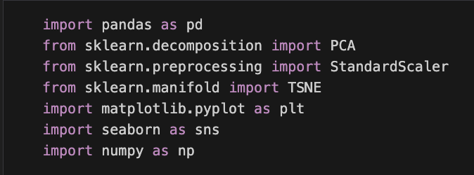
Methods
Principal Component Analysis
PCA, or Principal Component Analysis, is a prevalent technique in statistical data analysis for reducing the complexity of high-dimensional data while preserving essential trends and patterns. The method works by calculating the first principal component to account for the largest variance in the data, with each subsequent component designed to have the highest variance possible while remaining orthogonal to the previous components. It is essential to standardize the selected data before performing PCA, particularly when the variables have different scales. This approach is commonly employed for dimensionality reduction, pattern recognition, and data preparation for predictive modeling.
T-distributed Stochastic Neighbor Embedding
T-SNE, or t-distributed Stochastic Neighbor Embedding, is a non-linear technique that excels in visualizing complex high-dimensional data within a low-dimensional space by preserving the original structure and identifying clusters. It achieves this by mapping similar points closely together and separating dissimilar ones based on probability distributions, minimizing the divergence between the data’s high-dimensional and low-dimensional representations. However, due to its non-convex cost function, t-SNE can yield different visualizations upon varying initializations. While powerful for visual exploration, it’s advisable to pre-process data using methods like PCA for dense datasets or TruncatedSVD for sparse datasets, especially when dealing with more than 50 features.
Results and Implementations
Principal Components Analysis
The first step after applying the PCA technique to the dataset is to determine how many principal components to select. To facilitate this, a graph of the variance explained by the principal components is created, which visualizes the importance of each principal component. The results are presented as follows:
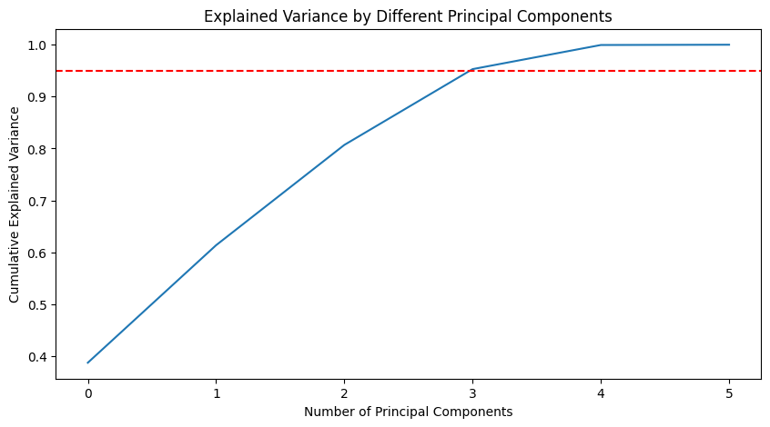
From the graph, it can be concluded that using the first four components explains 90% of the variance. By employing these four components, the dimensionality of the dataset can be effectively reduced from six to four while preserving most of the information from the original dataset. Therefore, four PCA components have been selected as a result of the PCA analysis.
After applying the PCA technique and selecting the first four components, visualizations using the PCA axes are created to display the effectiveness of using the PCA components to separate datasets based on the response variable. Since higher dimension visualization is challenging, 2-D graphs are generated to illustrate the differences. The combinations of the 1st and 2nd, 2nd and 3rd, and 3rd and 4th components are displayed as follows.
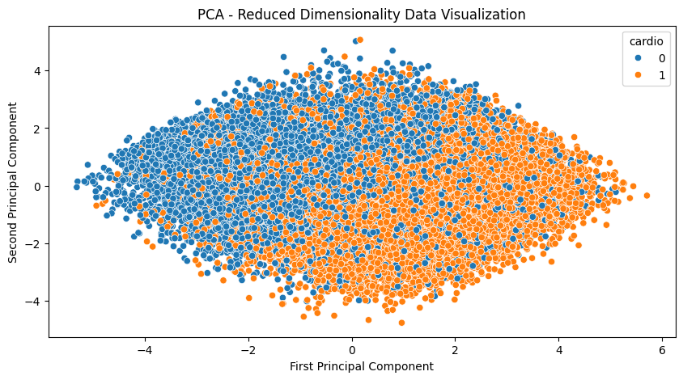
1st & 2nd
2nd & 3rd
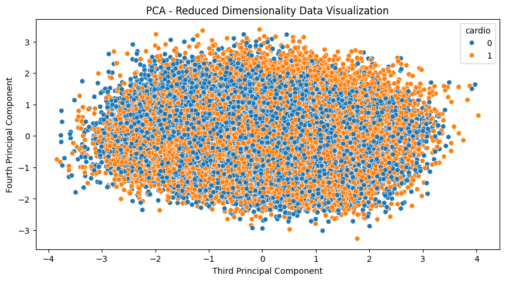
3rd & 4th
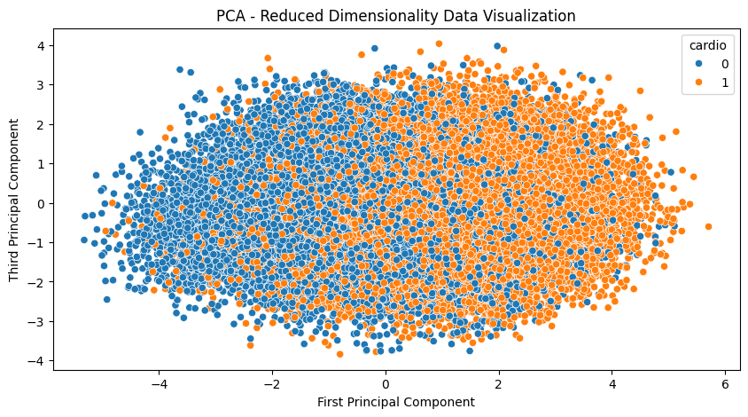
1st & 3rd
Based on the above visualizations, it is clear that the 1st, 2nd, and 3rd components effectively distinguish the different classes of the response variable “cardio”. The presence of cardiovascular diseases and non-cardiovascular diseases is clearly separated into two groups in the graphs. This indicates the strength of using the first four PCA components for further supervised model training processes to predict the response variable.
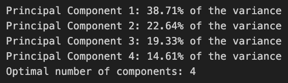
the Explained Variance by Each Component & the Optimal Number of Components
T-distributed Stochastic Neighbor Embedding
To perform t-SNE on the dataset, begin by choosing the target number of dimensions for the output, commonly set to two for visualization purposes. It’s important to preprocess the dataset, standardizing it if necessary, especially if the features have different scales.
The second step is to choose the value for one of the most important hyperparameters; perplexity. Perplexity in t-SNE, ranging typically from 5 to 50, acts as a knob controlling the emphasis on local versus global data structure in the resulting visualization. The right perplexity value, often found through experimentation, is crucial for meaningful low-dimensional embeddings, balancing the capture of global trends and local clusters within the data.
The range of perplexity values tested includes 1, 5, 10, 30, and 50. Due to the large volume of the dataset, only these five candidate values are tested to reduce the extensive processing time. Below are the results for each perplexity value after mapping the dataset into a 2-dimensional space.
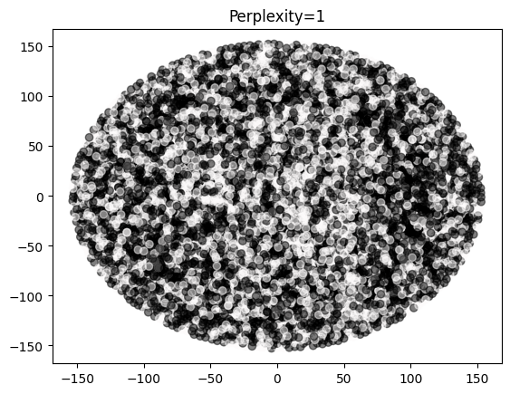
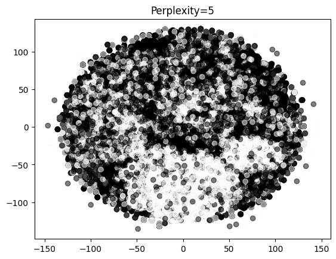
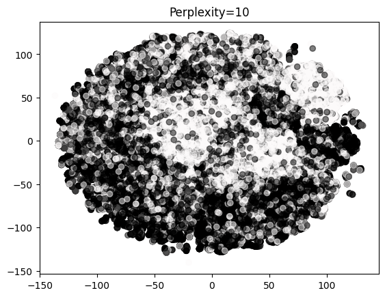
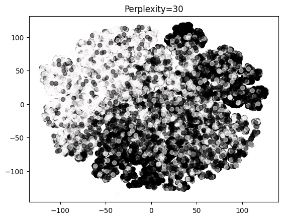
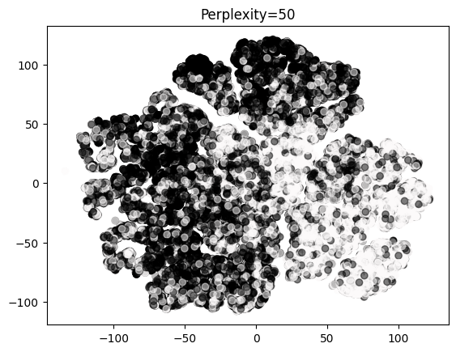
When perplexity is set to 1, it captures more local structures. Perplexity reflects the number of close neighbors each point considers. With low perplexity, fewer points are considered neighbors, resulting in a scattered plot with no distinct groups. As perplexity increases, points begin to separate out, preserving more global structure. At a perplexity of 30, there is a distinct separation between the two ‘cardio’ classes. Therefore, for optimal visualization of the global structure of the data, a perplexity value of 30 is chosen.
Evaluation and Comparison
From a data structure perspective, PCA excels at capturing the linear relationships between features by creating new dimensions that encapsulate the maximum variance from the original dataset. However, some information is inevitably lost during the PCA process since only a few principal components are selected for further analysis. In contrast, t-SNE is adept at capturing non-linear relationships. An optimal perplexity value must be chosen to balance the preservation of global and local structures of the original data.
Visually, both PCA and t-SNE can map high-dimensional data into lower-dimensional spaces, such as 2-D or 3-D, facilitating pattern detection through different components, thereby comparing the effectiveness of the two techniques.
The choice between PCA and t-SNE is largely dictated by the research objective. PCA is preferable when there’s a linear relationship between the response and feature variables. Conversely, t-SNE may be superior for more complex, non-linear relationships. Moreover, the number of PCA components and the perplexity value for t-SNE are crucial in deciding between the two, especially when considering the trade-off between preserving local and global structures.
For this research project, PCA is favored over t-SNE based on visualization results. The first three components distinctly separate data points across different “cardio” response variable levels. In subsequent supervised learning model training, PCA components could replace the original features to reduce dimensions and enhance processing speed.